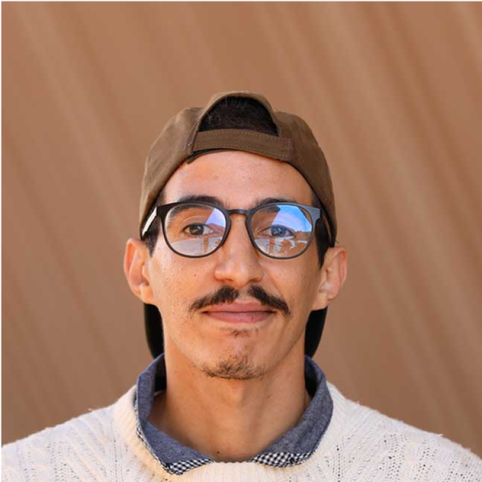

01
Systems / C
minishell
A POSIX-compliant UNIX shell built from scratch: lexer, parser, pipelines, redirections, heredocs and built-ins, with signal behaviour that matches Bash.
View on GitHubSoftware Engineering / Student · Builder
Souhail Ouichou is a software engineering student at 1337, with a background in operations, project management and technology-driven environments.

01 — Profile
Grounded in software, operations, leadership and problem-solving.
About me
I'm Souhail Ouichou, a software engineering student at 1337 Coding School with a background that combines technology, business operations and project management.
Before moving deeper into software engineering, I worked in fast-paced environments where communication, coordination, decision-making and problem-solving were part of everyday work.
These experiences shaped the way I approach technology: not just as code, but as a tool for solving real problems and building things that work.
I value empathy, critical thinking, adaptability and collaboration.
02 — Selected Work
Coded from scratch — every line hand-written
A POSIX-compliant UNIX shell built from scratch: lexer, parser, pipelines, redirections, heredocs and built-ins, with signal behaviour that matches Bash.
View on GitHubA deadlock-free Dining Philosophers simulation in POSIX threads: address-sorted lock ordering, a dedicated observer thread and sub-millisecond timing.
View on GitHubTransmits strings bit by bit between processes using only UNIX signals, with a custom ACK handshake that eliminates dropped bits and race conditions.
View on GitHubA multi-client IRC server over non-blocking sockets with a poll-based event loop, line buffering and the full command set: channels, kick, invite and modes.
View on GitHubA four-module C++98 suite: type casting & RTTI, template engines, STL containers and iterators, plus a Ford-Johnson sort benchmarked across container memory layouts.
View on GitHubA software-rendered 2.5D raycasting engine inspired by Wolfenstein 3D: DDA ray projection, directional texture mapping and direct frame buffering at 60+ FPS.
View on GitHubA real-time Mandelbrot, Julia and Burning Ship renderer with cursor-centered zoom, panning and HSV-to-RGB palettes — escape- time math computed per pixel.
View on GitHubA zero-trust web stack built from minimal Debian images: Nginx TLS 1.3 termination, WordPress on PHP-FPM and MariaDB behind an isolated bridge network with Docker Secrets.
View on GitHubVibe coded — built with AI agents in the loop
Architecture, specs and review are mine; implementation was produced and iterated with LLM agents. Each lives in its own repository.
Full-stack product MVP: FastAPI backend, React/Vite frontend and REST API design, deployed end to end on Vercel with docs and quickstart tooling.
View on GitHubAgent orchestration harness for bug-bounty workflows: recon pipelines, MCP servers, RAG context, prompt/steering systems and systemd-served gateway tooling.
View on GitHubSpecification-driven control plane for a multi-agent security harness: budgeting, egress compliance, triage, model routing and memory/RAG integration over FastAPI.
View on GitHubThe unexpected path
Construction sites taught me coordination.
Retail taught me speed.
Business taught me responsibility.
1337 is teaching me how to build.
Together, they shaped how I think.
03 — Experience
2021 — 2026
Espace Travaux du Sud
Directed and supervised construction projects from groundwork to delivery, coordinating site teams, subcontractors, logistics, safety, budgets and client relationships.
2020 — 2021
JibJib
Managed daily store operations in a fast-paced technology-driven delivery startup, coordinating teams, inventory, logistics and customer experience.
2024 — Present
1337 Coding School
Currently studying computer software engineering — learning how to build, think in systems and turn problems into working software.
04 — Education
2024 — 2026
Computer Software Engineering
2023 — 2024
Backend Development
Capabilities
Currently building
Exploring software engineering, backend development and practical technology solutions through the 1337 learning environment.
Next on the 2026 roadmap — documented as they ship.
Personal philosophy
Adaptability is not a soft skill. It's a way of working.
Different environments taught me different ways of thinking. Technology is where I bring them together.
05 — Contact
Open to meaningful collaborations,
software engineering opportunities
and conversations about technology.